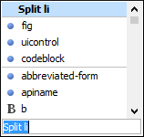

Editing DITA Topics
Oxygen XML Editor provides a number of features to help you edit DITA topics. A DITA topic is an XML document, thus all the editing features that Oxygen XML Editor provides for editing XML documents also apply to DITA topics. Oxygen XML Editor also provides extensive additional support specifically for DITA.
Opening a DITA Topic
- Double-click the topic in the DITA Maps Manager (or right-click the topic and select Open).
- Double-click the file in the Project view (or right-click the file and select Open).
- If you have a DITA map opened in the XML editor, you can click the icon to the left of the topic.
- Drag a DITA file from your system browser and drop it in the XML editor.
Visual Editing in Author Mode
DITA is an XML format, although you do not have to write raw XML to create and edit DITA topics. Oxygen XML Editor provides a graphical view of your topics in Author mode. Your topics will likely open in Author mode by default, so this is the first view you will see when you open or edit a DITA topic. If your topic does not open in Author mode, just click Author at the bottom left of the editor window to switch to this mode.
Author mode presents a graphical view of the document you are editing, similar to the view you would see in a word processor. However, there are some differences, including:
- Author mode is not a WYSIWYG view. It does not show you exactly what your content will look like when printed or displayed on-screen. The appearance of your output is determined by the DITA publishing process, and your organization may have modified that process to change how the output is displayed. Oxygen XML Editor has no way of determining what your final output will look like or where line breaks or page breaks will fall. Treat Author mode as a friendly visual editing environment, not a faithful preview of your output.
- Your document is still an XML document. Author mode creates a visual representation of your document by applying a CSS stylesheet to the XML. You can see the XML at any time by switching to Text mode. You, or someone in your organization, can change how the Author view looks by changing the CSS stylesheet or providing an alternate stylesheet.
- Your aim in editing a DITA document is not to make it look right, but to create a complete and correct DITA XML document. Author mode keeps you informed of the correctness of your content by highlighting XML errors in the text and showing you the current status in a box at the top right of the editor window. Green means that your document is valid, yellow means valid with warnings, and red means invalid. Warnings and errors are displayed when you place the cursor on the error location.
- Your XML elements may have attributes set on them. Conventionally, attributes are used to contain metadata that is not displayed to the reader. By default, attributes are not displayed in the Author view (though there are some exceptions) and cannot be edited directly in the Author view (though in some cases the CSS that drives the display may use form controls to let you edit attributes directly). To edit the attributes of an element, place your cursor on the element and press Alt+Enter to bring up the attribute editor. Alternatively, you can use the Attributes view to edit attributes.
Content Completion Assistance
-
The Enter key: In Author mode, the Enter key does not create line breaks, it brings up the Content Completion Assistant to help you enter a new element. In XML, you do not use line breaks to separate paragraphs. You create paragraphs by creating paragraph elements (element
<p>in DITA) and tools insert the line breaks in the output and on-screen.Figure 1. Content Completion Assistant The Content Completion Assistant not only suggests new elements you can add. If you press Enter at the end of a block element (such as a paragraph) it suggests creating a new element of the same type. If you press Enter in the middle of a block element, it suggests splitting that element into two elements.
A useful consequence of this behavior is that you can create a new paragraph simply by hitting Enter twice (just as you might in a text editor).
As you highlight an element name, a basic description of the element is displayed. Select the desired element and press Enter to create it.
To wrap an element around an existing element or piece of text, simply select it and press Enter and use the Content Completion Assistant to choose the wrapper element.
- The Model view: You can see the entire model of the current element by opening the Model view (, if the view is not already open). The Model view shows you what type of content the current element can contain, all the child elements it can contain, all its permitted attributes, and their types.
DITA Editing Actions
A variety of actions are available in the DITA framework to specifically assist you with editing DITA documents. These various actions are available in the contextual menu, the DITA menu, the DITA (Author Custom Actions) toolbar, or the Content Completion Assistant.
The DITA toolbar contains buttons for inserting a number of common DITA elements (elements that are found in most DITA topic types).
Whenever the current document in the editor is a DITA document, the DITA menu is displayed in the menu bar. It contains a large number of actions for inserting elements, creating content references and keys, editing DITA documents, and controlling the display. These actions are specific to DITA and supplement the general editing commands available for all document types. Many of these actions are also conveniently available in the contextual menu. In addition to the DITA framework-specific actions, the contextual menu also includes various general Author mode contextual menu actions.